من أنا؟
أبني حلولاً تجمع بين التكنولوجيا والأعمال لتحويل الأفكار إلى منتجات ذات قيمة حقيقية.

اختر اللغةChoose your language

تكنولوجيا المعلومات للأعمال | التكنولوجيا وابتكار الأعمال
أعمل على بناء حلول قائمة على التكنولوجيا تقع عند نقطة التقاء الأعمال والذكاء الاصطناعي والابتكار الرقمي. ينعكس تركيزي على تحويل الأفكار إلى منتجات عملية، وأتمتة عمليات الأعمال، وابتكار حلول رقمية قابلة للتوسع تعالج مشكلات واقعية.
ويحركني هدف واحد: تحويل التكنولوجيا إلى قيمة تجارية ملموسة وقابلة للقياس.
Business Information Technology | Technology & Business Innovation
I build technology-driven solutions at the intersection of business, artificial intelligence, and digital innovation. My focus is turning ideas into practical products, automating business processes, and creating scalable digital solutions for real-world problems.
I am driven by one goal: transforming technology into tangible, measurable business value.
“الفكرة لا تصبح فرصة حقيقية حتى تجد طريقها من الورق إلى السوق.”
نبذة عني
أبني حلولاً تجمع بين التكنولوجيا والأعمال لتحويل الأفكار إلى منتجات ذات قيمة حقيقية.
حلول رقمية، أتمتة، ذكاء اصطناعي، وتطوير منتجات قابلة للنمو والتوسع.
تكنولوجيا معلومات الأعمال، مع خبرة في إدارة المشاريع وبناء الفرق وتطوير الحلول الرقمية.
تحويل المشكلات الحقيقية إلى فرص، والأفكار الجيدة إلى منتجات قابلة للتنفيذ والنمو.
“An idea becomes a real opportunity when it finds a path from paper to market.”
About me
I build solutions that bring technology and business together to create products with measurable value.
Digital solutions, automation, artificial intelligence, and scalable product development.
Business Information Technology, with experience in project management, team building, and digital solutions.
Turn real problems into opportunities and strong ideas into executable products that grow.
الأثر بالأرقام
تركيز واضح على تحويل الأفكار إلى حلول رقمية قابلة للنمو.
Impact in numbers
A clear focus on turning ideas into scalable digital solutions.
ما أبنيه لا يبدأ من سؤال: ما التقنية التي يمكنني استخدامها؟ بل من سؤال: ما المشكلة التي تستحق الحل؟
What I build starts with one question: what problem is worth solving?
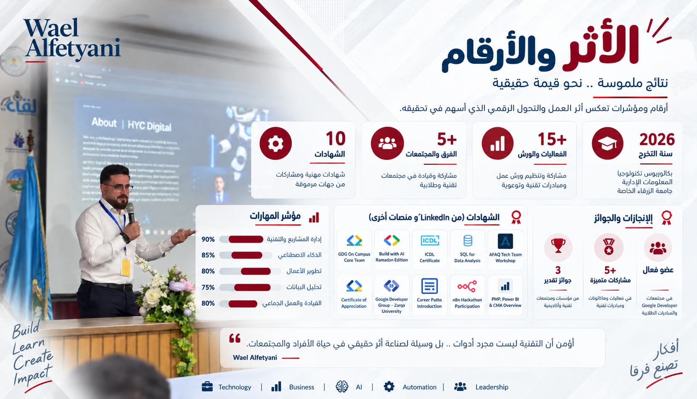
الأثر بالأرقامImpact in numbers
أرقام ومؤشرات تعكس أثر العمل والتعلّم والتحول الرقمي.Metrics that reflect the impact of work, learning, and digital transformation.
بكالوريوس تكنولوجيا المعلومات الإدارية — جامعة الزرقاء الخاصة.Bachelor's degree in Management Information Systems — Zarqa Private University.
مشاركة وتنظيم ورش عمل ومبادرات تقنية وتوعوية.Participating in and organizing technical and awareness workshops and initiatives.
مشاركة وقيادة ضمن مجتمعات تقنية وطلابية.Participation and leadership in technical and student communities.
شهادات مهنية ومشاركات موثقة من جهات متنوعة.Professional certificates and documented contributions from diverse organizations.
مؤشر المهاراتSkills snapshot
الإنجازات والجوائزAchievements and awards
الشهاداتCertificates
LinkedIn ومنصات أخرىLinkedIn and other platformsGoogle Developer Group On Campus Zarqa University
Issued Jun 2026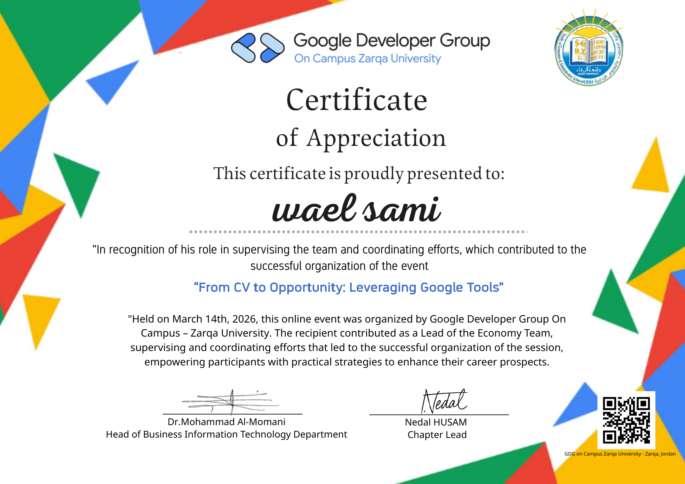
Certificate of Completion — GDG On Campus Core Team MemberAwarded for serving as a Google Developer Groups On Campus core team member for the 2025–2026 academic year.Google Developer Groups on Campus (GDG-NKOCET)
Issued Mar 2026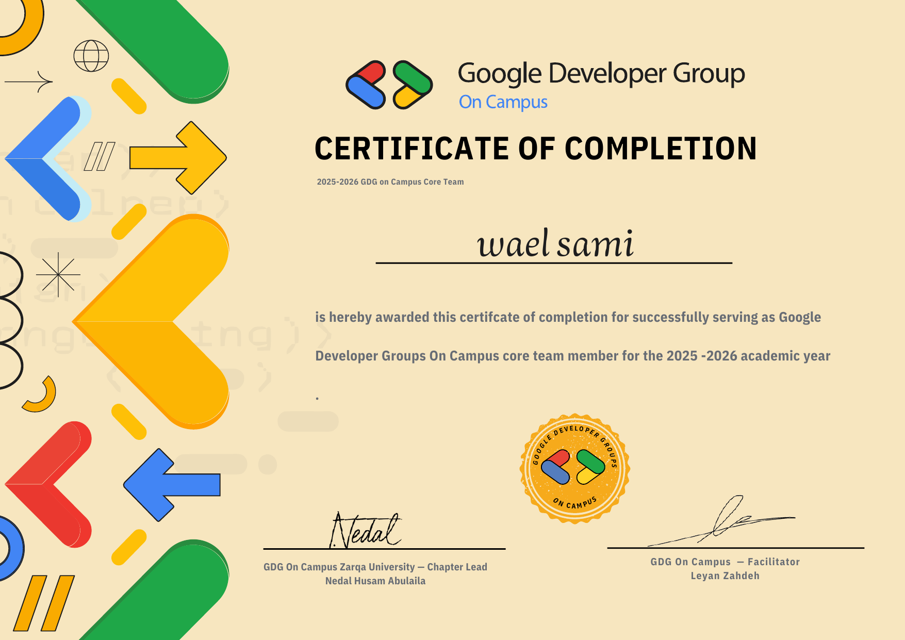
Build with AI — Ramadan Edition | Google Developer GroupsCertificate of participation in a practical Google Cloud and AI learning event.Qafza
Issued Oct 2025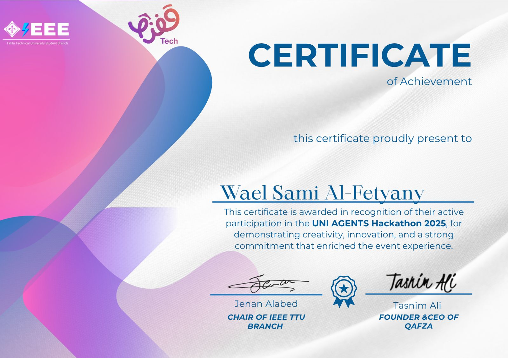
Certificate of Appreciation from QafzaCredential ID: Participant — Team of Zarqa University.The Hope International Edu
Issued Dec 2025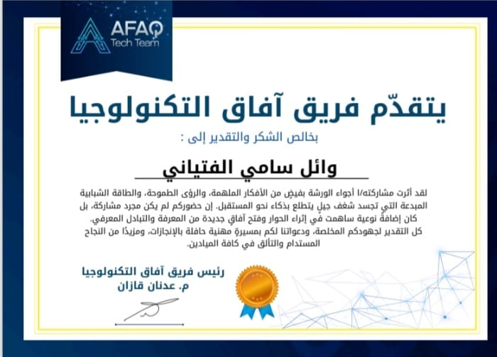
Certificate of Appreciation from HopeSkills: Data Analysis, Power BI, Business Analysis, Financial Management.Google Developer Group On Campus Zarqa University
Issued Jan 2026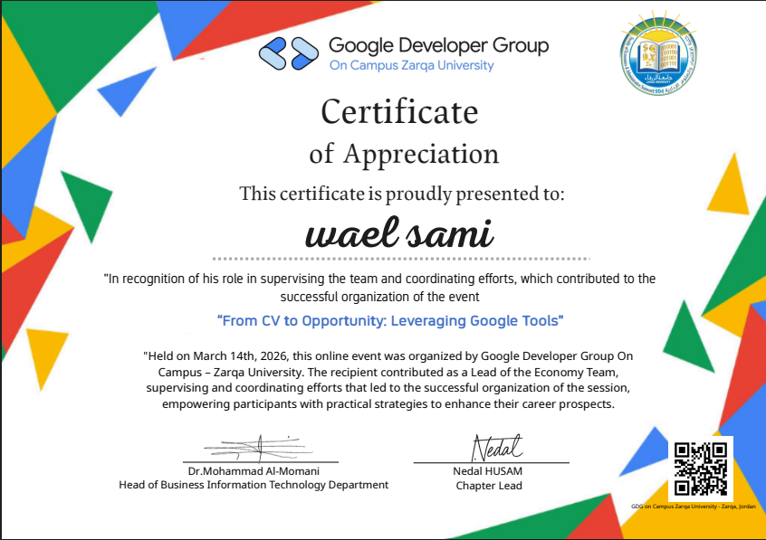
GDG On Campus Community MemberMember of GDG On Campus Zarqa University, engaged in tech events and continuous learning.Google Developer Group On Campus Zarqa University
Issued Jan 2026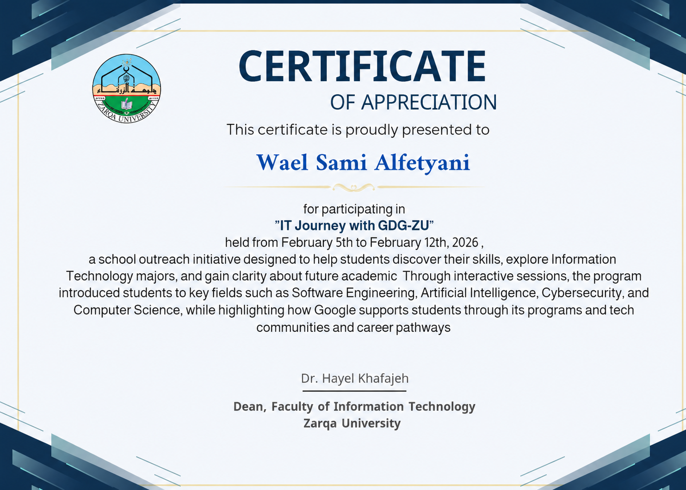
IT Journey with GDG-ZUParticipated in the school outreach initiative exploring technology and career pathways.Qafza
Issued Jan 2026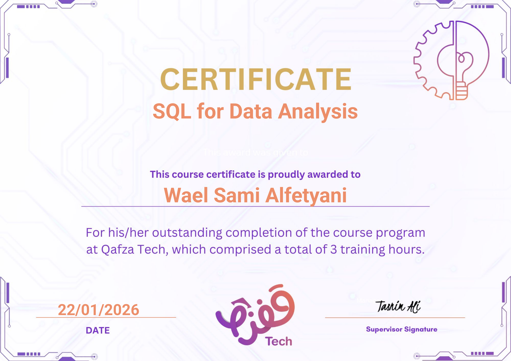
Certificate SQL for Data AnalysisCredential for completing practical SQL and data analysis learning.XO for Software
Issued Jan 2026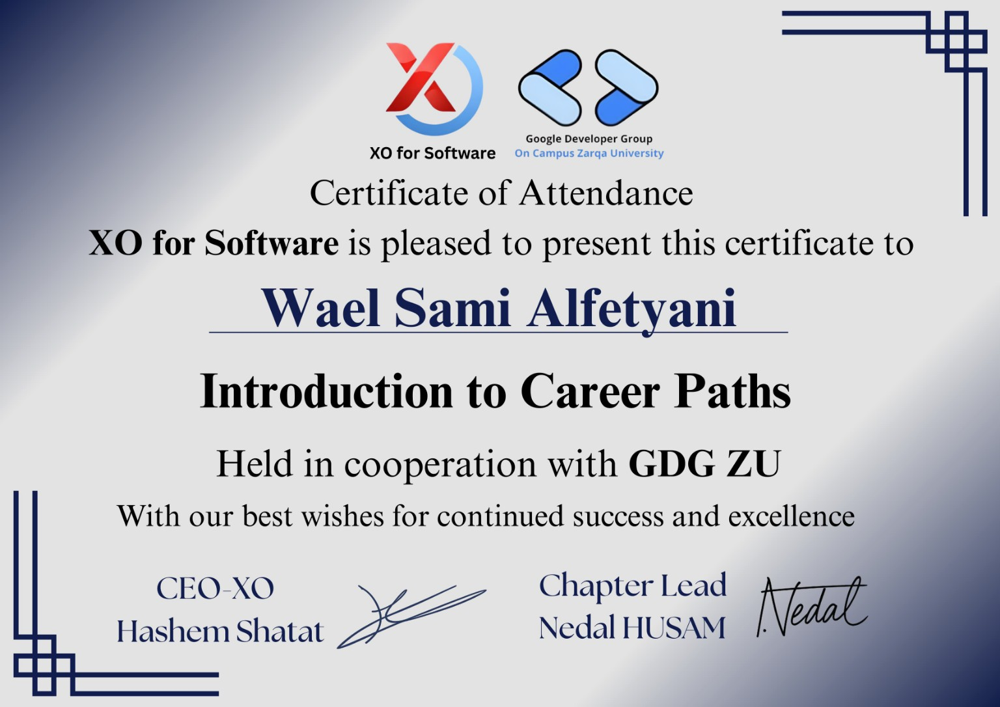
Exploring Tech Career Paths & Professional DevelopmentParticipated in the Introduction to Career Paths session organized by XO for Software in cooperation with GDG Zarqa University.ABE - ARAB ACADEMY
Issued Jan 2026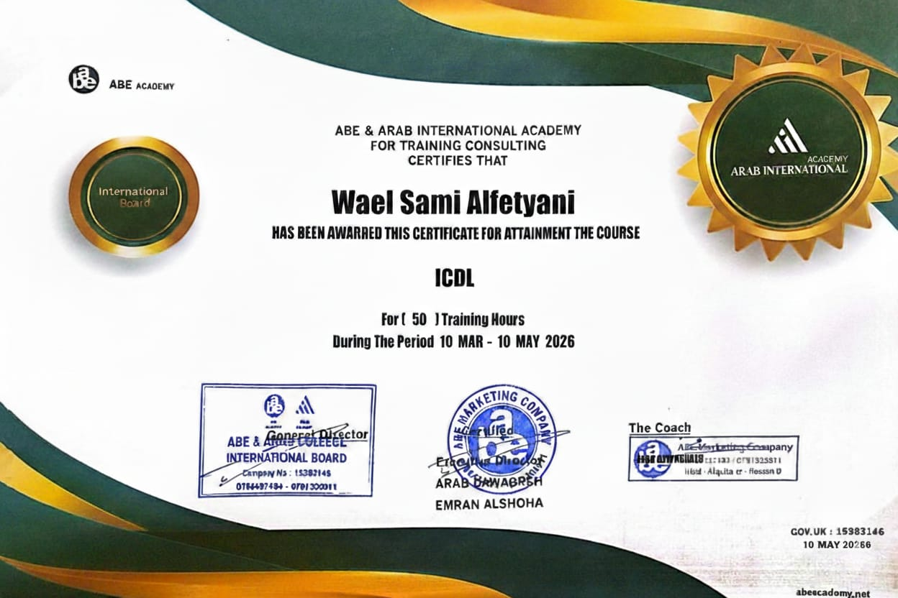
ICDL — International Computer Driving License CertificationCompleted a 50-hour ICDL training program covering essential computer skills.المشاريع والشراكات
حلول رقمية صُممت لتنظيم العمل وتحسين التجربة وبناء أثر قابل للتوسع.
Projects & partnerships
Digital products designed to organize work, improve experiences, and create scalable impact.
 01ZeroPointمنصة لتنظيم المشاريع والأفكار.A platform for organizing projects and ideas.↗
01ZeroPointمنصة لتنظيم المشاريع والأفكار.A platform for organizing projects and ideas.↗
 02Ghaith Smartنظام ذكي لإدارة العيادات والمواعيد.Smart clinic and appointment management.↗
02Ghaith Smartنظام ذكي لإدارة العيادات والمواعيد.Smart clinic and appointment management.↗
 03Dr Fares Clinicتجربة رقمية للعيادة والحجوزات.A digital clinic and booking experience.↗
03Dr Fares Clinicتجربة رقمية للعيادة والحجوزات.A digital clinic and booking experience.↗
 04Mawaeedkomمنصة مرنة لحجز المواعيد.A flexible appointment booking platform.↗
04Mawaeedkomمنصة مرنة لحجز المواعيد.A flexible appointment booking platform.↗
 05ChatHYCقيد الإنشاءIn progressمنصة موحدة للخدمات الرقمية الذكية.A unified smart digital services platform.↗
05ChatHYCقيد الإنشاءIn progressمنصة موحدة للخدمات الرقمية الذكية.A unified smart digital services platform.↗
 06Sakanمنصة بسيطة لإدارة العقارات.A simple real-estate management platform.↗
06Sakanمنصة بسيطة لإدارة العقارات.A simple real-estate management platform.↗
 07Tawabirkom Appخدمات وطلبات رقمية سريعة.Fast digital services and requests.↗
07Tawabirkom Appخدمات وطلبات رقمية سريعة.Fast digital services and requests.↗
 08Aman Flow Citizenمنصة للمشاركة المجتمعية.A community participation platform.↗
08Aman Flow Citizenمنصة للمشاركة المجتمعية.A community participation platform.↗
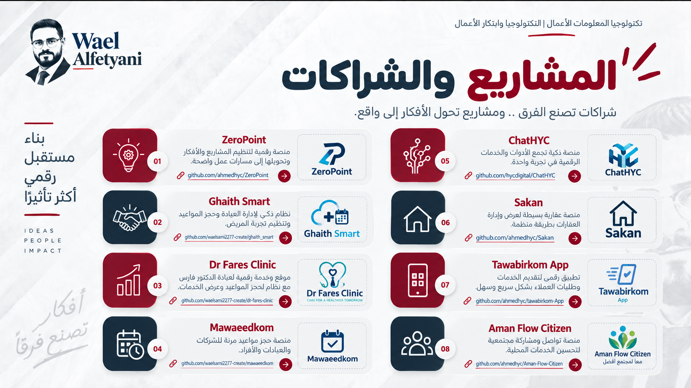
Projects & partnerships
المشاريع والشراكات
منصات وخدمات رقمية صُممت لتنظيم العمل وتحسين التجربة وبناء أثر قابل للتوسع.
منصة رقمية لتنظيم المشاريع والأفكار وتحويلها إلى مسارات عمل واضحة.
مشاهدة المشروعنظام ذكي لإدارة العيادة وحجز المواعيد وتنظيم تجربة المريض.
مشاهدة المشروعموقع وخدمة رقمية لعيادة الدكتور فارس مع نظام لحجز المواعيد وعرض الخدمات.
مشاهدة المشروعمنصة حجز مواعيد مرنة للشركات والعيادات والأفراد.
مشاهدة المشروعمنصة ذكية تجمع الأدوات والخدمات الرقمية في تجربة واحدة.
مشاهدة المشروعمنصة عقارية بسيطة لعرض وإدارة العقارات بطريقة منظمة.
مشاهدة المشروعتطبيق رقمي لتقديم الخدمات والطلبات للعملاء بشكل سريع وسهل.
مشاهدة المشروعمنصة تواصل ومشاركة مجتمعية لتحسين الخدمات المحلية.
مشاهدة المشروعالأخبار والتحديثات
فيديوهات، مشاركات، وتحديثات من الفعاليات والمشاريع والأنشطة المهنية.
News & Updates
Videos, posts, and updates from projects, events, and professional activities.
للتواصل والتعاون
إذا كان لديك مشروع، فكرة، أو فرصة تعاون في التكنولوجيا والأعمال، يسعدني أن نتحدث.
Connect & collaborate
Have a project, idea, or collaboration opportunity in technology and business? I would be glad to connect.
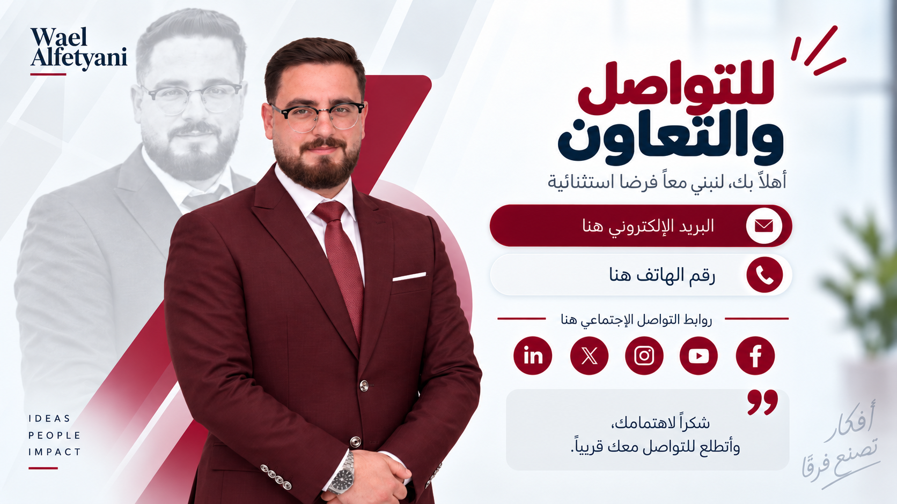
Connect & collaborate
Have a project, an idea, or a collaboration opportunity in technology and business? I would be glad to connect.
Connect on LinkedInللتواصل والتعاون
إذا كان لديك مشروع، فكرة، أو فرصة تعاون في التكنولوجيا والأعمال، يسعدني أن نتحدث.
IDEAS · PEOPLE · IMPACT